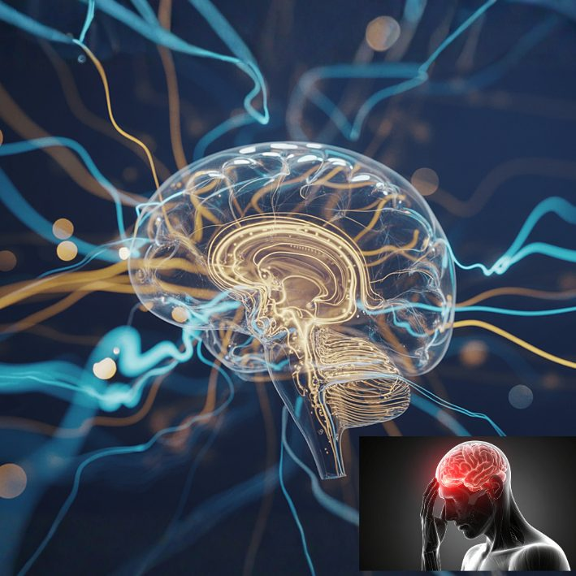

More Than Just a Headache: Migraine Explained
Do you get throbbing headaches that force you to lie down in a dark, quiet room? Do light, noise or strong smells make it worse, and does nausea come with it? Do you lose a day of work or family life each time, and wonder whether something serious is going on in your head? This may be migraine. It is real, it is common, and it can be controlled.
What Is Migraine?
Migraine is a long-term neurological condition that causes repeated attacks of headache and other symptoms. It is not simply “a bad headache” and it is not caused by weakness or exaggeration. During an attack, nerve pathways and blood vessels in the brain become over-active and sensitive, which produces pain and a wave of other symptoms.
It affects roughly 1 in 7 people, women about three times more often than men, and most often between the ages of 20 and 50. It often runs in families.
The Warning Signs
- A throbbing or pulsating headache, often on one side, moderate to severe, that gets worse with walking, climbing stairs or any routine activity.
- Attacks lasting from 4 hours to 3 days if untreated.
- Nausea or vomiting.
- Sensitivity to light, noise and smells, with a strong wish to lie down in a dark room.
- An “aura” in about 1 in 4 people: flashing or zigzag lights, blind spots, tingling in the face or hand, or temporary difficulty finding words. It builds over minutes, usually lasts less than an hour and fades completely before or as the headache begins.
- Early clues hours or a day before, such as yawning, mood change, food cravings or a stiff neck, and feeling drained or foggy afterwards.
What Triggers an Attack?
Triggers differ from person to person, and often several add up together:
- Stress, and also the letdown after a stressful period.
- Too little or too much sleep, or irregular sleep times, including untreated sleep apnoea.
- Skipped meals, long fasting or dehydration, which are easy to fall into in the Mauritian heat.
- Hormonal changes, especially around the monthly period.
- Bright sun, glare, strong smells, heat or weather changes.
- Alcohol, especially red wine, and too much caffeine, or suddenly stopping it.
- Certain foods in some individuals. A diary is more reliable than guessing, because cravings before an attack are often mistaken for triggers.
Is It Really Migraine? How It Is Diagnosed
There is no blood test, X-ray or scan that confirms migraine. The diagnosis is made by a doctor from the story of your attacks and an examination, using established criteria. A normal neurological examination in someone with a typical pattern is very reassuring.
Tests such as a brain scan are not needed for typical migraine, but they are important when something does not fit, for instance:
- A new type of headache that starts after the age of 50.
- Headaches that keep getting worse over weeks.
- Abnormal findings on examination, or symptoms such as weakness or seizures.
It is also worth checking your blood pressure, since very high pressure can cause headaches and is easy to treat.
How Is It Treated?
The best results come from combining several approaches:
- Treat early, with the right medicine. At the first sign of the headache, simple painkillers such as paracetamol or an anti-inflammatory can work well, sometimes with an anti-sickness medicine. For stronger attacks, specific migraine medicines called triptans may be prescribed. They are not suitable for everyone, particularly people with heart disease, stroke or uncontrolled high blood pressure. Opioid painkillers are not recommended.
- Do not overuse painkillers. Taking pain relief on 10 to 15 or more days a month can itself cause a daily headache, called medication-overuse headache, and makes migraine harder to treat. If you need medicine this often, it is time to see a doctor.
- Healthy routines. Regular sleep and wake times, regular meals, plenty of water, moderate caffeine, and regular exercise such as walking or swimming reduce attacks for many people.
- Stress and mind-body support. Relaxation, breathing exercises, mindfulness and cognitive behavioural therapy can help.
- Preventive treatment, when attacks are frequent or disabling. If you have around 4 or more headache days a month, or attacks that keep ruining your life, a daily medicine can reduce how often and how severe they are. Several types exist, including some originally developed for blood pressure, depression or epilepsy, which are used here in small doses for a different purpose. They are chosen individually, and some are not suitable in pregnancy. Some people also benefit from supplements such as magnesium or riboflavin, but check with your doctor first.
A note for women: if you have migraine with aura, tell your doctor before using any contraceptive pill that contains oestrogen, because the combination slightly raises the risk of stroke. Smoking adds to that risk.
Myths and Facts
- “It is just stress or being weak.” No. Migraine is a genuine neurological condition with a strong inherited component.
- “It must be my sinuses.” Rarely. Many “sinus headaches” are actually migraine.
- “I need a brain scan every time.” No. Typical migraine with a normal examination does not need one.
- “Taking painkillers every day is safe.” No. Frequent use can make headaches more frequent.
- “Nothing can be done.” No. Most people improve a great deal with the right plan.
When to Seek Medical Help Quickly
- 🔴 A sudden, explosive headache that reaches its worst within a minute, or “the worst headache of your life”: call SAMU (114) or go to hospital immediately.
- 🔴 Weakness or numbness on one side, drooping face, slurred speech, confusion or loss of consciousness. These can be signs of a stroke (see neurological warning signs).
- 🔴 Headache with fever, a stiff neck or a rash, or after a head injury.
- 🟡 An aura that lasts longer than an hour, or that is new, unusual, or involves weakness.
- 🟡 A new headache after the age of 50, or headaches that are steadily getting worse or wake you from sleep.
- 🟡 Headaches that come on with coughing, straining or exercise.
- 🟡 Headaches on more than a few days a month, or needing painkillers often, or affecting your work, sleep or family life.
The Bottom Line
Migraine is common, genuine and very much treatable. It is not a sign of weakness, and it is not something you simply have to put up with. With the right diagnosis, early treatment, steady daily routines and, when needed, preventive medicine, most people have fewer and milder attacks and get their days back.
If you have been living with repeated headaches and no clear explanation, do not give up. Always consult your doctor before starting or stopping any medicine.
Repeated headaches that disrupt your life? Message directly and ask.
Message on WhatsAppThis article is general health information and does not replace a medical consultation. In a medical emergency, call SAMU (114) or go to your nearest hospital.